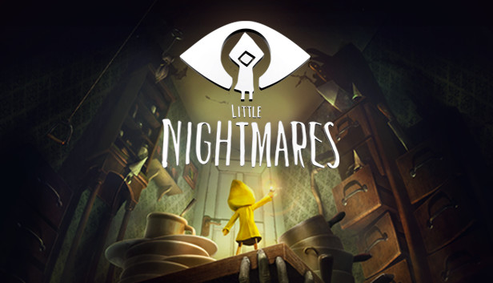

A Study of Little Nightmares by Tarsier Studios: Sounds and Visualizations for Narrative Development and Devices in the Horror Game
Little Nightmares follows a small girl in a raincoat who wakes up on a suitcase with no memory in a strange and dark place.
Armed only with a deep and insatible hunger, the little girl "Six", must traverse through the immense labyrinth known as "The Maw"
looking for any way to escape. During the game's three acts, Six slowly begins uncovering
the horrendous truth about The Maw and why her hunger is so unquenchable.
Everytime instance Six gets hungry in Little Nightmares. Three devices that can always be observed during these occurrences are the deep hunger grumbles, heartbeats, and glassy bell-like sounds.
As Six's body physically cries out for sustenance, we may attribute Didier Anzieu's theory The Skin Ego. Anzieu states that the cry of hunger
is a key fundamental leap in developing communication and language skills. As Six does not speak (note 1).
Being chased by the assortment of monsters is also signaled by a rapid heartbeat audible cue. Watch and take notice of the audible cues and how they might elicit apphrension
and fear in the player.

(note 1): Anzieu, Didier The Skin Ego translated by Chris Turner (New Haven: Yale University
Press, 1989).